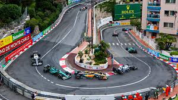

GP DE MÓNACO: TODO LO QUE TENÉS QUE SABER
Este fin de semana se corre el Gran Premio de Mónaco en el Circuito de Montecarlo y estas son todas las claves que tenés que saber para disfrutar de la segunda carrera de Franco Colapinto en el año:
Este trazado callejero fue inaugurado el 14 de abril de 1929 en el Principado de Mónaco, motivo por el cual también se lo conoce como Circuito de Mónaco. Tiene una longitud de 3,33 km por vuelta, 19 curvas y 78 giros, siendo el circuito del calendario con la mayor cantidad. Sin embargo, la distancia total de carrera es de 260,286 km, bastante menor a la distancia de 305 km que establece la normativa como distancia mínima.
Charles Leclerc: Profeta en su tierra el año pasado
El monegasco se consagró como el ganador del Gran Premio de local, el piloto de Ferrari se había quedado con la pole position en la clasificación y supo mantener la colocación durante toda la carrera. El podio lo completaron Oscar Piastri y Carlos Sainz.
Además de Franco: Los argentinos que corrieron en este circuito
Por esta pista pasaron una gran cantidad de pilotos argentinos entre los que se encuentra nada más ni nada menos que el gran Juan Manuel Fangio, quien lo disputó en las ediciones de 1950, donde logró llevarse la victoria, 1955, 1956 y 1957 con una victoria en esta última. Otro argentino que logró quedarse con este gran premio fue Carlos Reutemann en 1980 a bordo de Williams, el santafesino también participó de las ediciones de 1973, 1974, 1975, 1976, 19777, 1978, 1979 y 1981.
A las fuertes presencias se suma José Froilán Gonzalez, el oriundo de Arrecifes hizo su debut en la máxima categoría del deporte motor en La Costa Azul. En la primera y única carrera disputada en el principado “El Cabezón” no pudo terminar la carrera.
Otros representantes albicelestes en el país europeo fueron Roberto Mieres, Oscar Larrauri, Esteban Tuerto y Gastón Mazzacane. Este último fue el automovilista más reciente en competir en esta sede.
Cronograma del fin de semana
Viernes:
- Prácticas Libres 1 a las 8:30 hrs
- Prácticas Libres 2 a las 12:00 hrs
Sábado:
- Prácticas Libres 3 a las 7:30 hrs
- Clasificación a partir de las 11:00 hrs
Sábado:
- Carrera a las 10:00
Todos los horarios son conforme al horario argentino